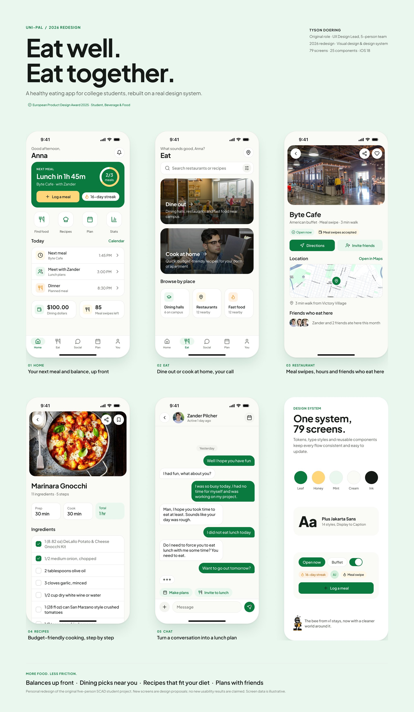
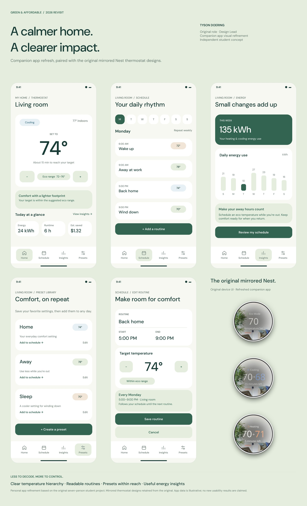
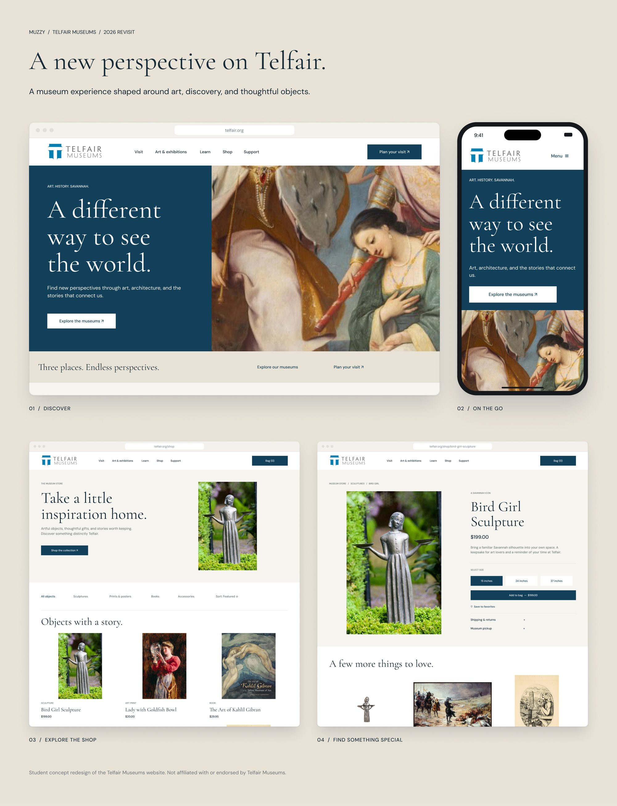

Three projects, redesigned in 2026
Looking back at some of my older projects, I could tell how much I've grown as a designer since I made them. So I went back and redesigned three of them to match the kind of work I do now.
The original ideas and research stay the same. What changed is the visual design, the layouts and how the screens are built. These are personal updates I did on my own, not new class projects, and I didn't run new usability tests on them.
Uni-Pal
Uni-Pal was my first UX project, and it looked like it. I rebuilt every screen on a real design system with shared colors, type and components, so every flow feels like the same app. I kept the original brand and the bee, just cleaned everything up to current iOS standards.
- 79 screens rebuilt on one design system
- Meal swipes and dining dollars moved up front on Home
- Clearer flows for dining, recipes, chat and settings
- Original brand and mascot kept, just modernized

Before and after
Nest, Green & Affordable
For Green & Affordable I focused on the companion app. I wanted a calmer layout where the temperature is the first thing you see and your energy use is easy to understand. The thermostat designs on the board are the originals from the team project.
- Clearer temperature hierarchy
- Routines you can read at a glance
- Presets that are easier to reach
- Energy insights that suggest a next step

Before and after
Muzzy
Muzzy is a website concept for Telfair Museums. It was designed for the web, so I refreshed the homepage, the shop and a product page with a more editorial look built around the art.
- Editorial layout that lets the art lead
- Simpler shop with clearer product cards
- Cleaner product page with sizes and add to bag

Before and after
Student concept. Not affiliated with or endorsed by Telfair Museums.
Click any image to open it full size.